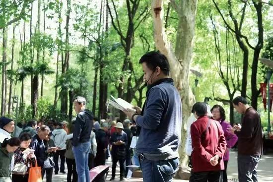
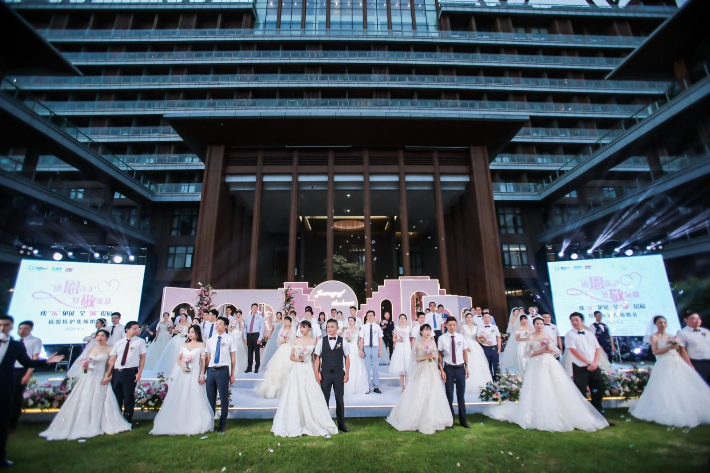
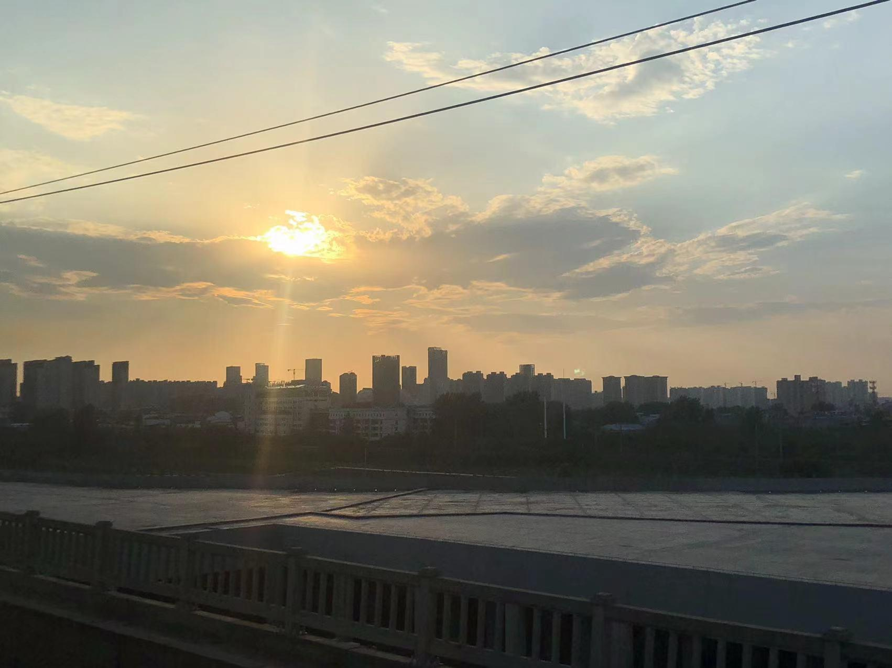
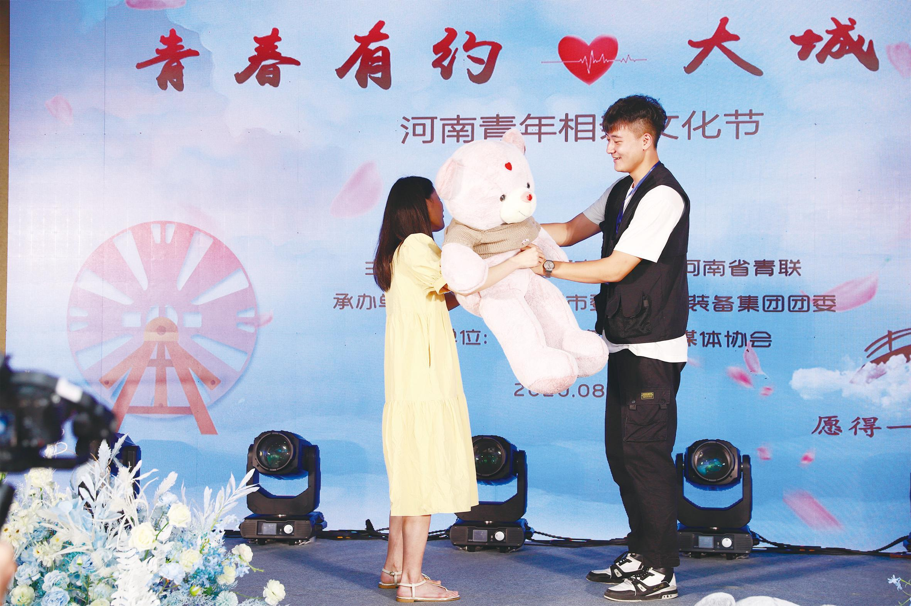
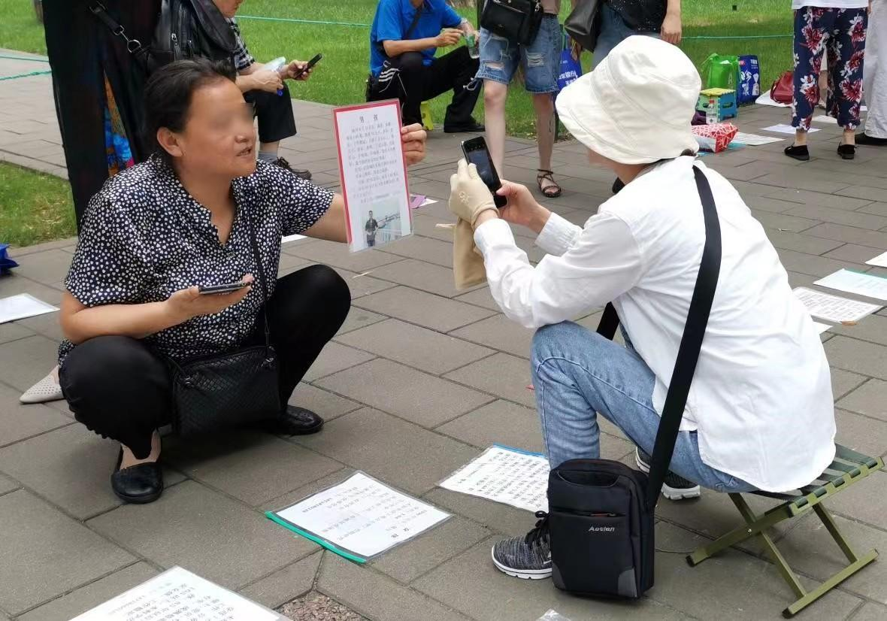

30 岁小城未婚女性，陷入婚恋僵局
从一位小城女性的相亲经历出发，呈现家庭期待、地方生活与个人选择之间的张力。
全文阅读
单宁今年31岁，这已经是她被催婚的第七年。单身的她逐渐成为小城市中的“异类”，也成为朋友、同事中的异类。面对父母和环境的压力，她暂时还没有打算妥协，但她也在问自己：“我是不是应该听父母的话找个人结婚？” “过了30岁，是不是就‘不值钱’了，应该降低标准？”“我的坚持到底对不对？”
被催婚第7 年
听着坐在对面的相亲对象讲着自己不打算留在本地的宏伟志向，聊着他打电话“声讨”追自己前任的男生的往事，单宁隐隐觉得，这又将是一场失败的相亲饭局。
回去之后，单宁觉得对方也对自己没感觉，“我也不想欠他的”，于是发微信对他说：“我们AA吧。”
对面回：“这点饭钱我还是付得起的。”随后，男方对介绍人提起这件事，并称单宁没看上他。
这件事传到单宁母亲耳中。她提出AA的行为，在母亲看来，是对相亲的抗拒、是不想结婚的表现。在争吵中，母亲愤怒道：“你想我到路上举个牌子说我女儿要找对象吗？不如上大街随便拉个人把你嫁了！”单宁很少回嘴——“因为他们（父母）身体也不太好，所以我一般都尽量避免和他们争吵。”于是，在同一屋檐下，这对母女开始了长达一个月的冷战——谁也不跟谁说话。

单宁并不算一个相亲新手。今年31岁的她在父母眼中，已经成为了标准的“大龄剩女”。早在她24岁，刚大学毕业回家工作时，父母的催婚行动便拉开了序幕。7年来，单宁已经被安排相处过近30位相亲对象，大多数相处中止在了微信聊天阶段，她只与其中不到10位见过面，但即使是走到了“见面”这一步的相亲，也都是以失败告终。
单宁不是一个不婚主义者，她并不抗拒婚姻，“但前提是人是对的，我只想找到一个合适的人。”单宁颇为无奈和苦恼地说道。她很看感觉，想要找一个跟自己聊得来、并且能够让自己开心的人，并没有其他的硬性条件。“我觉得有句话说得特别好，‘有的人是为了找那个和他一起看电影的人，而我是为了找那个分享观影心得的人。’”
然而，相亲总是意味着条件的相匹配，几行微信上的文字、一次匆匆的饭局无法让单宁收获一个“与自己同频的人”。曾经一位相亲对象，与单宁加上微信第一天，闲聊几句后，便开始询问单宁父母的职业，并要求单宁为他拍摄家中的陈设，称“想看看你的家是什么样子”。单宁觉得自己正在被进行资产评估，拒绝并拉黑了他。
她总是觉得第一眼没感觉，也总是觉得自己太慢热——“其实我的外在条件并不是很好，我不好看，身材也不好，性格内向。还没让对方有机会了解我的内在，一场相亲就结束了。”
单宁的父母对自己的未来女婿的要求则是“没什么特别的要求，只要有一份稳定的工作就行”，单宁用一句话概括父母对自己的择偶要求：“反正就是希望我早点结婚。”

“隔壁××都有重孙了，我还什么都没有！”“我都不敢去参加同学聚会，就怕别人问起我孩子怎么还不结婚，我可丢不起这个脸！”这是单宁最常从母亲口中听到的催婚话术，每当有朋友结婚，或者国庆等节假日结婚人群众多的时候，单宁的母亲总是会通过类似上述的“带点讽刺的话语”来提点她。
母亲的话语并没有奏效。在经历一次恋爱失败，一次又一次相亲失败后，单宁也对寻找志同道合的人这一目标感到灰心，她坦言，自己已经有点放弃（找对象）了。她并不热衷于认识新的人——她总是提到“独处”，她享受独处，享受和自己相处的感觉，也很会给自己找事情做，“总之就是很喜欢一个人呆着的感觉，有时候会感觉如果有另一个人一起生活会很麻烦。”
单宁不敢直接告诉父母自己“可能不会结婚”，她知道父母“男大当婚，女大当嫁”的传统婚姻观是很难改变的，只能偶尔旁敲侧击地进行暗示。
有时相亲结束，单宁会给母亲说一下对方的缺点，表示“我和他真的不合适”，顺便表示“我不能随便找个人嫁了，过得不幸福不如自己单独过”。有时候她会用玩笑的语气说：“我买个房子吧，出去自己住养个猫咪。”今年夏天，她曾带着母亲看一部名为《江照黎明》的电视剧，看到女主被家暴的情节时，她对母亲吐槽说：“你看，男人不可靠，不如靠自己。”面对女儿的“叛逆言论”，单宁母亲一般都会翻个白眼，笑骂几句。偶尔几次，她会非常严肃的问单宁：“你是不是不打算结婚了？”单宁吓得忙说不是，那是因为没遇到合适的人。因为母亲有冠心病和高血压，单宁会尽量避免和母亲吵架，“一般都是哄着”。
尽管单宁已经接受了自己可能无法找到合适的人结婚的现实，但她和父母的感情很好，这给她的选择带来了很多心理压力，因为她总是会反思自己这样是否做错，是否应该听父母的话随便找个人结婚。
“你为什么和大家不一样？”
2015年，单宁大学毕业以后便从省会郑州回到了小城三门峡，在一个私企做造价工作，工作稳定，每月薪水三千到四千左右，在当地属于较为平均的水准。
她并不怀念大城市，她喜欢小城市慢节奏和安逸的生活，“上班只要花半小时通勤，甚至有时候可以走去上班。”

只是，当身边的同龄的同事、朋友都结了婚，甚至有了二胎，年龄比她小的同事也都结婚生子，单宁渐渐觉得她的生活步调正逐渐与这座小城失调，她真切地感受到，在这座城市里，她属于“少数”。
朋友们已婚后，忙着自己的家庭和孩子，都与单宁这位单身人士渐渐疏远。同事闲聊时聊到妻子、丈夫、孩子的话题，她感到无所适从。她的婚姻状况也经常成为别人的谈资——“怎么还不找啊”“再不生孩子就晚了”“别再挑剔了，差不多就行了”……
“在小城市里，你的同事会问你为什么不结婚，你的朋友也会问你为什么不结婚。我知道的，其实他们根本不在意我到底结不结婚、和谁结婚。他们在意的只不过是：你为什么和大家不一样呢？”
参加同事待客，同桌的隔壁桌的人过来敬酒时，当众对着单宁说：“我们这现在就只有你没结婚了，加油啊！”单宁不知道如何回应，只得举着酒杯尴尬地微笑。
在无数个这样不知所措的时刻，单宁才会想：“如果我没有回家，是不是就不会有这种困扰？”

2019年，江西财经大学的欧阳静、马海鹏在中部D县针对县域体制内“剩女”进行了调查，认为小城市女性找不到合适的结婚对象，受高等化教育市场化改革的影响。80后、90后不再有分配就业的说法，在自主择业的前提下，回家乡县城的女大学生比率要远大于男生，这主要源于家庭对男孩和女孩（大部分是独生女）的预期和定位不同。大部分家长认为，男孩子应该去外面闯，女孩就要安稳，最好在父母身边。
单宁就是家里唯一的孩子，她毕业后，在郑州投简历并未找到合适的工作，父母又表示不舍的她一个人在外打拼，她没有犹豫地回到了这座她曾经生活了十几年的城市，与父母住在一起，从此便再也没有离开过。
26岁时，她曾与一位大学男同学谈过一段3个月的异地恋，这也是她31年人生中唯一一段恋爱。单宁不觉得自己对他感情很深，只是因为对方是第一个实实在在跟她说“我们谈恋爱吧”的人，她深受感动，便答应了。
由于在持有保守观念的父母心中，异地恋意味着不确定、不稳定，她并没有把这段恋情告诉父母。父母仍在抓紧一切时间为她安排相亲，她拒绝了。然而，当她远在别处的男朋友知晓了这件事，只觉得她不想和自己走到最后。经历了闹脾气、不接电话、双方冷战后，这段短暂的感情无疾而终。
单宁又恢复了单身，今年是她单身的第五年。
三十之惑
30岁之后，单宁能明显感受到，自己被介绍相亲的次数越来越少，被介绍的相亲对象也明显不如之前。30岁之前，单宁的相亲对象大多是老师、警察、银行职员等职业的男性。而她30岁之后的第一个相亲对象，是眼镜店的店员。
一天，她接到一位男性的电话，对方称是别人介绍的相亲对象，让单宁通过一下微信好友申请。那时，单宁还未从父母听闻有人给自己介绍了对象，但电话里不好拒绝，单宁还是通过了他的好友申请。
不久，对方发来消息：“美女不好意思，让你等了这么久。”随后的几乎每一条消息，都以“美女”开头。单宁并未及时回复他的消息，他发来一句：“你好冷。”随后将单宁从微信好友列表里删除。
一天之内，单宁30岁后的第一次相亲以失败告终。她觉得又好笑又好气，也在心里默默问自己：“我真的只值得这样的人吗？难道介绍人心里我的条件对等的映射就是这样的？”

欧阳静等人的研究还发现，在县域内，女性一旦超过30岁就会丧失择偶的年龄优势。而虽然流入小县城工作的男性个人素质上普遍不如女性，但适龄的“体制男”，即便是“歪瓜裂枣”也依旧不用担心找对象。如此，小城市女性的婚姻，成了一场与时间的竞赛。
单宁身边的女性朋友，几乎都是在刚开始工作时便被家人介绍相亲，不久便结婚了。单宁用略带夸张的语气说道：“真的很快速，你觉得她上一年还没有对象，过了半年就立马结婚了。”另一位与她相识的男生，今年31岁，家里人为他介绍了一位刚大学毕业的24岁女生，两人相亲之后很快步入婚姻。
从24岁开始相亲时，单宁的相亲对象差不多是29、30岁的；28岁时，也是30岁左右的男生，不过条件上都大不如前；现在单宁30岁了，她深觉自己已经被婚恋市场抛弃了，越来越少的人把优质的男性介绍给她，除非“二婚男”。
30岁后的每一场相亲， 都让单宁觉得自己在“进行一场贱卖”。一方面，她认为从外貌、身材等外在条件上来说，自己在明码标价的相亲场上并不具有优势；另一方面来说，她认为自己至少是朋友眼中公认的“有趣的灵魂”，有着丰富的内心世界，她还不甘心妥协，不甘心仅仅因为到年纪了就找个人为了结婚而结婚。
比起年轻相亲时好奇但也有点抗拒的心态，单宁已经渐渐地不再抗拒相亲，心态上平和了许多，但也不会想深入地了解对方。她仍然在尝试，但永远抱着最坏的打算开始。
当聊起和以前的采访对象还有没有联系，她干脆地说：“那没有，我都已经拉黑了。”（应采访对象要求，文中人物名为化名。）参考文献：欧阳静,马海鹏.县域体制内的“剩女”——基于中部D县的调查[J].中国青年研究,2019(10):77-82.